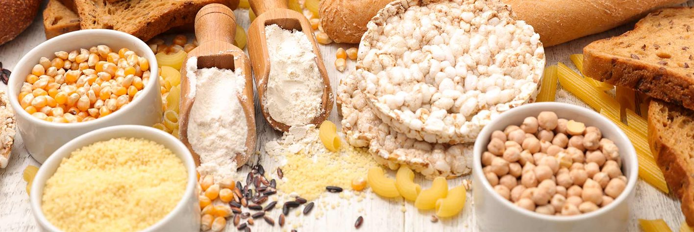
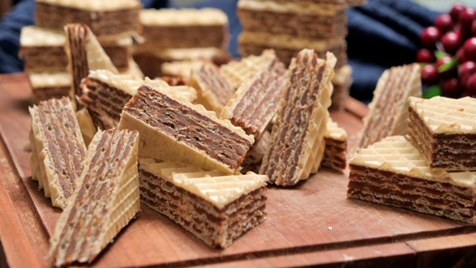
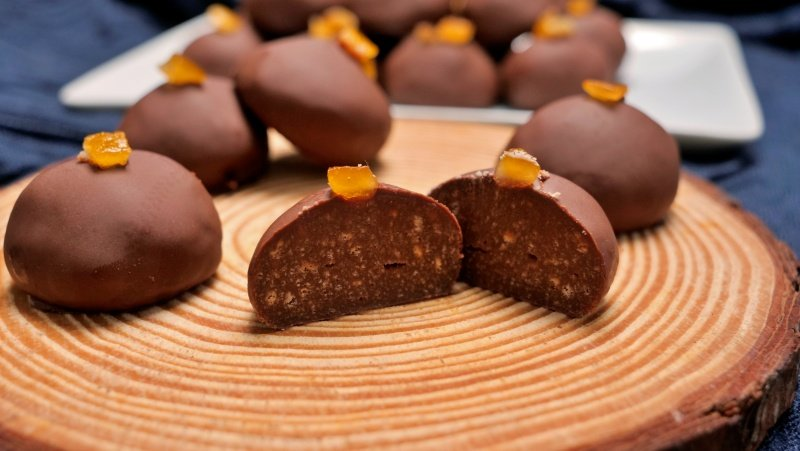
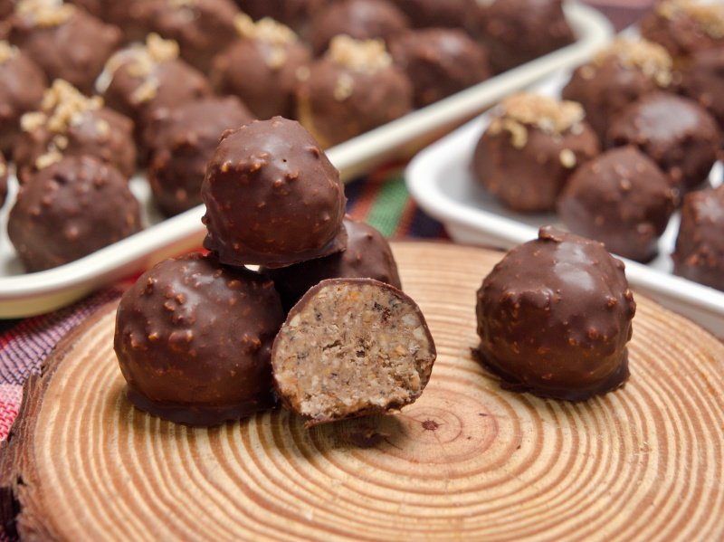
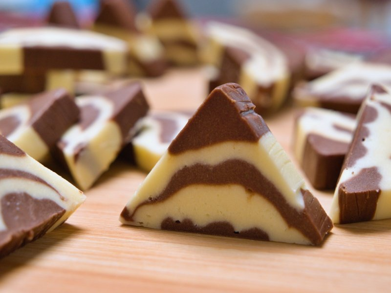
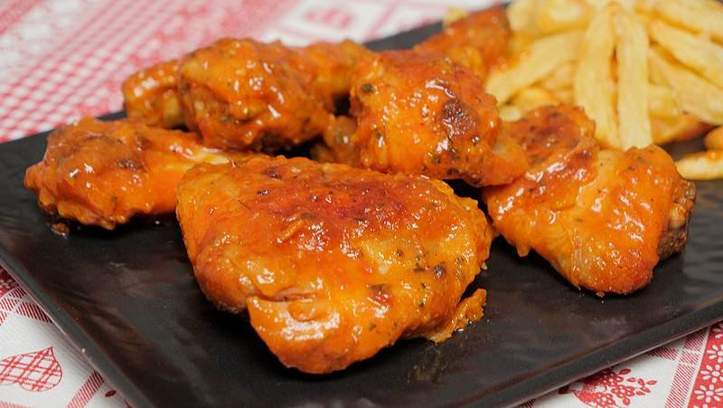

Moji tajni recepti

Čokoladne oblande
Ove čokoladne oblande spadaju u jeftine oblande koje prave se od celog pakovanja oblandi i malo sastojaka.
Keks i čokolada. Mogu da budu posne i mrsne, kako god želite.
Sastojci:
- 400 ml mleka ili vode ( sojino mleko )
- 400 gr šećera
- 250 gr margarina ili maslaca
- 200 gr čokolade
- 500 gr mlevenog keksa ( ukoliko imate oraha i lešnika možete jedan deo i njih da stavite umesto keksa )
- 1 pakovanje oblandi
Priprema:
Pomešati mleko ili vodu sa šećerom, staviti na vatru, pa naseckati margarin ili maslac i sačekati da se sve otopi i provri.
kada provri kuvati oko 2 minute, pa dodati izlomljenu čokoladu.
Nastaviti mešanje dok se čokolad aotopi.
Skloniti sa vatre, dodati keks i dobro promešati.
Ako je redje ne brinite, steže se kako se hladi pa da vas to ne buni.
Ostaviti 10 minuta da se prohlade, povremeno promešati kako bi vrelina izašla napolje.
Mazati hrapavu stranu bogato ovim filom.
Pritisnuti nečim celu površinu oblande kako bi se svi listovi lepo zalepili.
Najlakše je mazati na dasci za seenje mesa ili naopakoj tacni jer tako rubovi tacne ne smetaju.
Posle nekog vremena okrenuti oblandu naopako, da bi se donji deo hladi.
Ovims prečavate da vam oblande budu žilave od dole.
Prijatno.

Čokoladne bombice
Još jedan u nizu sitnih kolačića, jednostavan a opet jako fin. Po želji se može dodati malo ruma, kandiranog voća, limunove ili pomorandžine korice. Ukoliko vam je mnogo meru možete prepoloviti jer se dobije baš mnogo, ili pak podeliti na dva dela i jedan ostaviti čist, a u drugi dodavati ukuse po želji.
Bombice mogu biti i posne i mrsne.
Sastojci:
- 300 ml mleka / vode / sojinog mleka
- 400 gr šećera
- 200 gr čokolade
- 250 gr margarina
- 500 gr mlevenog keksa
- rum, kandirano voće, korica limuna ili pomorandže, višnje iz kompota, žele bombone, orasi, lešnici, bademi…
Glazura:
- na 100 gr čokolade 3 kašike ulja
Priprema:
Pomešati mleko / vodu i šećer, naseckati margarin i staviti an vatru.
Sačekati da provri uz povremeno mešanje.
Kada provri dodati izlomljenu čokoladu, pa oept uz mešanje sačekati da se čokolada otopi.
Kuvati minut – dva, pa skloniti sa vatre.
Dodati keks i izmešati.
Ostaviti da se ohladi, kako se masa bude hladila tako će se i stezati.
Od ohladjene smese praviti kuglice i redjati na tacnu.
Staviti u frižider da se stegne.
Otopiti čokoladu sa uljem, pa umakati svaku kuglicu u čokoladu, ocediti je i stavljati na papir za pečenje ili rešetku.
Ostaviti da se čokolada stegne ili sa papirom zajedno svući na tacnu i staviti u frižider.
Prijatno.

Ferrero kuglice
Ferrero kuglice koje se prave od tri već gotova sastojka, lešnika, napolitanki i eurokrema. Lešnike obično ne meljem nego blendiram kako bih imala i krupnije i sitnije komadiće koji hrskaju, pa zbog toga se malo teže umese, tačnije oblikuju. Ukoliko ih sameljete lakše ćete oblikovati kuglice, a ukoliko volite ovako kao ja trebaće vam malo više truda. Ovde nema šta da ne uspe, jer su sastojci već gotov proizvod koji se samo meša.
Sastojci:
- 200 gr pečenog lešnika
- 150 gr lešnik napolitanki
- 250 gr eurokrema
Glazura:
- 200 gr čokolade
- 2 kašike ulja
- 50 gr peenog lešnika
Priprema:
Samleti lešnik i napolitanke. Ja to uradim zajedno jer je lešnik suvlji a napolitanke vlažnije i kako se napolitanke ne bi lepile meljem zajedno. Vi uradite kako vam je lakše.
Stavite sve u jednu posudu i dodajte 250 gr omekšalog eurokrema.
Dobro izmešajte i sjedinite.
Masu stavite sat vremena u frižider.
U frižideru će se stegnuti, ali od topline ruku će otpustiti i oblikovaćete kuglicu.
Nemojte ni predugo da držite masu za kuglicu u rukama, onda nećete baš moći da je oblikujete.
Kakve god da napravite valjaće.
Zašto? Jer ćete ih slagati na tacnu i vratiti u frižider i čokoladirati kada budete imali vremena a one će se stegnuti.
Otopiti čokoladu sa uljem, pa dodati blendirani lešnik. Treba da bude sitan.
Ostaviti da se prohladi 5 – 10 minuta.
Umakati kuglice u čokoladu, otresti višak i staviti kuglicu na rešetku ili papir za pečenje. Sa papira se lako skida.
Papir lako prebacite na tacnu, samo podmetnete i svučete na nju i stavite u frižider do služenja. Posle ih samo spakujete u korpice.
Prijatno.
Čokoladne bombice
Još jedan u nizu sitnih kolačića, jednostavan a opet jako fin. Po želji se može dodati malo ruma, kandiranog voća, limunove ili pomorandžine korice. Ukoliko vam je mnogo meru možete prepoloviti jer se dobije baš mnogo, ili pak podeliti na dva dela i jedan ostaviti čist, a u drugi dodavati ukuse po želji.
Bombice mogu biti i posne i mrsne.
Sastojci:
- 300 ml mleka / vode / sojinog mleka
- 400 gr šećera
- 200 gr čokolade
- 250 gr margarina
- 500 gr mlevenog keksa
- rum, kandirano voće, korica limuna ili pomorandže, višnje iz kompota, žele bombone, orasi, lešnici, bademi…
Glazura:
- na 100 gr čokolade 3 kašike ulja
Priprema:
Pomešati mleko / vodu i šećer, naseckati margarin i staviti an vatru.
Sačekati da provri uz povremeno mešanje.
Kada provri dodati izlomljenu čokoladu, pa oept uz mešanje sačekati da se čokolada otopi.
Kuvati minut – dva, pa skloniti sa vatre.
Dodati keks i izmešati.
Ostaviti da se ohladi, kako se masa bude hladila tako će se i stezati.
Od ohladjene smese praviti kuglice i redjati na tacnu.
Staviti u frižider da se stegne.
Otopiti čokoladu sa uljem, pa umakati svaku kuglicu u čokoladu, ocediti je i stavljati na papir za pečenje ili rešetku.
Ostaviti da se čokolada stegne ili sa papirom zajedno svući na tacnu i staviti u frižider.
Prijatno.

Kinder toblerone
Za kinder toblerone masa je ista kao kod rafaelo kuglice do dodavanja kokosa. Izuzimamo ga i dodajemo čokoladu. Divan ukus, drugačiji od ostalih slatkiša na koje ste navikli. Ukoliko nemate trouglaste kalupiće izlijte obe smese u neki manji pleh i posle secite na štanglice, može i tako.
Sastojci:
- 300 gr šećera
- 100 ml vode
- 125 gr margarina ili maslaca
- 200 gr mleka u prahu
- 100 gr kvalitetne crne čokolade
- 100 gr mlečne bele čokolade
Priprema:
Pomešati vodu, šećer i iseckan margarin.
Staviti na vatru da se otopi provri.
U toku otapanja povremeno mešati kašikom.
Masa će provriti pre nego sto se otopi margarin, nastaviti polako mešanje.
Kada se margarin otopio kuvati naredne 3 minuta na srednjoj vatri.
Skloniti sa vatre, dodati mleko u prahu i miksirati.
Najbolje bi bilo da ranije pripremite mikser i mleko u prahu, kako bi čim ga istresete mutili, da ne bi došlo do grudvica.
Kada ste izmutili u jednu posudu izlomite belu čokoladu i preko nje prelijte pola ove smese.
Možete odokativno, ako slučajno je malo jedne mase više ništa strašno.
U drugu polovinu nalomite crnu čokoladu i izmešajte dok se čokolada otopi.
Spremite trouglasti kalupić i u njega stavite streč foliju.
Kašikom sipajte malo jedne pa malo druge smese naizmenično.
Smese ima dovoljno za pun kalup, a malo i preko.
Ja nisam punila do kraja pa mi je ostalo malo i jedne i druge smese, koje kada pomešate i dodate malo keksa možete da oblikujete kuglice.
Ostavite da se stegne pa izvadite iz kalupa, naseckajte i poslužite.
Prijatno.

Piletina u čili sosu
Piletina sa začinima, pečena na maslacu u ljutom sosu koji je bio ljut, al preukusan. E sad, možete da pravite blago ljuti ili jače, zavisno kako volite, ali kako god da napravite verujte biće jako fino, što bi rekli prste ćete polizati.
Sastojci:
- piletina ( krilca, bataci, karabataci ili iskošteni delovi belog mesa) kod mene je to bio skoro popunjen pleh od rerne, jedno kilogram ipo
- začini ( 1 ravna kašika suvog začina, na kvrh kašičice soli, pola kašičice bibera, pola kašičice belog luka u prahu, kašika sušenog prešunovog lista, kašičica karija, pola kašičice kurkume, 1 kašičica crvene, mlevene paprike, 1 puna kašika kukuruznog brašna, ne palente, brašna )
- 50 ml čili sosa
- 50 ml kečapa
- 50 ml paradajz soka
- 1 kašičica čilija u prahu
- 60 gr maslaca + 65 gr maslaca
- malo soli
Priprema:
Razdvojiti batake od karabataka ako nisu razdvojeni.
Pomešati sve začine i brašno i izmešati.
Posuti po piletini celu smesu začina i dobro izmešati, da ta mešavina prodje svuda.
Ostaviti dok se rerna zagreje.
U pleh staviti papir za pečenje pa na njega naseckati 65 gr maslaca.
Na maslac poslagati komade piletine i staviti da se peku. Dole staviti deo sa kožicom.
Posle 45 minuta okrenuti i peći još 30 minuta ili dok ne bude dovoljno rumeno po vašem ukusu.
Za sos, pomešati sve sastojke, maslaca iseckati malo.
Staviti na vatru da provri i kuvati minuta.
Probati da li vam ukus odgovara – ljutina, slanoća, odnos slatko kiselo. Pa ko vam nešto još treba dodati.
Kada je piletina pečena izvaditi je u jednu dublju posudu i preliti ovim sosom.
Dobro sve izmuljati.
Pazite, piletina je pečena i hoće po neki komadić da otpadne, zato polako.
Servirajte uz pomfrit.
Prijatno!

Ćufte u mlečnom sosu sa spanaćem
Ćufte na 1001 način. Pravim ih kad god mi treba neko brzo jelo, posebno kada deca idu popodne u školu. Dok se ćufte peku napravim neki sos i pire ili pomfrit, zavisno koliko imam vremena i ručak je čas posla gotov.
Sastojci za ćufte:
- 600 gr mlevenog mesa po izboru
- 1 celo jaje
- pola kašike suvog začina
- na vrh kašičice ili po ukusu bibera
- na vrh kašičice belog luka u granulama
- pola čaše mleka
- 2 komada odstajalog hleba ( hleb od juče, prekjuče )
Sastojci za sos:
- 2 kašike brašna
- 100 ml ulja ili 100 gr putera
- 200 ml pavlake za kuvanje
- 400 ml mleka
- 200 – 300 gr svežeg spanaća
- so i biber po ukusu, malo belog luka u granulama
Priprema:
Iskidati hleb pa preliti mlekom, dodatno malo rukom izgnječiti.
Dodati meso, jaje i začine i dobro umesiti.
Vlažnim rukama oblikovati kuglice i redjati na pouljenu tacnu.
Zagrejati ulje na srednju vatru pa spuštati loptice i peći sa svih strana ravnomerno
Kada stavite ćufte da se peku operite spanać, pa u dublji tiganj ili šerpu sipajte ulje ili puter pa kad se zagreje smanjite na srednju vatru, dodajte brašno mešajte minut – dva dok blago ne požuti. Naliti zatim pavlaku za kuvanje pa mleko. Mešajte i dodajte spanać, smanjite vatru na laganu, da polako vri. Ukoliko je spanać sitan ne morate ga seckati, ako su listovi krupniji iseckajte.
Mešajte pa dodajte začine. Sos treba da je redji, pa ako vam se zgusne slobodno dolijte još malo mleka.
Pečene ćufte spuštajte u sos koji i dalje krčka. Kada završite pečenje još malo krčkajte ćufte na laganoj vatri pa sklonite.
Dok su ćufte u sosu možete da ispečete pomfrit ili pre pravljenja ćufti da stavite krompir da se skuva za pire, po želji.
Prijatno!